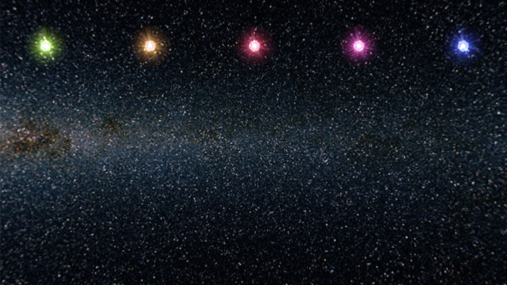

1. Introduction
-
In this lab, you will learn to create and use vectors to move game objects.
-
You will also learn to utilise arrays.
2. Setting Up
-
Create a new TL-Engine project and name it Lab6_Vectors_Project.
-
Download the associated media files for this lab from this link and use the AttachMediaFolder() method to point TL-Engine to the folder where they are saved.
-
Load and create a model using "stars.x". This will be your skybox.
-
Create a 'kManual' camera and position it at ( 0, 0, -60 ).
-
Load the "particle.x" mesh and use it to create a model called particleModel at (0, 30, 0).
-
Include a line of code within the game loop to make the particleModel slowly move downwards. Use movement relative to the world, not local movement. For example:
particleModel->MoveY( -0.005f ); -
When particleModel reaches the bottom of the screen set its coordinates back to ( 0, 30, 0 ) using the SetPosition() method. Again note that you are using world coordinates not local coordinates.
particleModel should now fall down the screen and when it hits the bottom reappear at the top of the screen. Ensure that it is falling slowly at a value of 0.005, if this is not already the case.particleModel->SetPosition( 0, 30, 0 );
3.Introducing Vectors
-
Vectors are used throughout games development as a way of describing movement or direction. In 3D, a vector is simply three numbers: x, y and z, written between round brackets and separated by commas. The first number is the x value; the second number is the y value; and the third value is the z value. However, these numbers now represent movement or direction instead of a location.
-
The vector of movement for particleModel is ( 0, -0.005, 0 ). This vector means that the model is advancing by:
- a value of 0 along the x axis
- a value of -0.005 along the y axis
- a value of 0 along the z axis
-
Declare three floating point variables: movementX, movementY and movementZ. Set the value of movementX to 0, the value of movementY to -0.005 and the value of movementZ to 0. The variables should be created outside the game loop.
-
Replace the MoveY() command in your game loop with a Move() method that takes in vector (movementX, movementY, movementZ) as its parameter.
particleModel->Move(movementX, movementY, movementZ);Note that the above code is equivalent to using a separate move method for each component of the vector i.e. MoveY(movementY); MoveX(movementX); MoveZ(movementZ);
-
Compile and run your program, particleModel should be dropping down the screen as before.
-
Change the value of movementX and movementY so that now the vector (-0.01, -0.01, 0) is being applied to particleModel and then run the program.
-
Experiment with some other values for movementX and movementY.
-
As you can see, one of the immediate advantages of using a vector is that you don't have to change any code within the game loop. All you have to consider is the direction of movement and set up the appropriate vector. This is how all movement within a graphics engine is dealt with. All models within 3D graphics are moved using vectors.
4. Adding Vectors
-
Vectors can be combined together. This is one reason why they are so useful a tool within graphics. Imagine that there is a wind blowing across the screen from right to left, particleModel is falling down but at the same time it is being pushed by the wind. This can be represented using a second vector
-
Set the movement vector of particleModel back to to (0, -0.005, 0).
-
Create a new vector for the wind. Declare three floating point variables: windX, windY and windZ. Set this new wind vector to (-0.005, 0, 0).
-
Within the game loop add a new Move() command in your code so that particleModel is also moved using the wind vector.
-
Run the program. As you can see particleModel is falling diagonally. The net effect of applying the wind vector and the movement vector is as if you had one vector of value (-0.005, -0.005, 0).
-
Vectors can be added together to produce one new vector. When two vectors are added together you sum the x values of the two vectors, then the y values and finally the z values.
Use a pen and a sheet of paper to add the vetors (0, -0.005, 0) and (-0.005, 0, 0). You should get the new vector (-0.005, -0.005, 0).
-
Experiment with the values of the movement vector of particleModel and the wind vector. You will explore vectors in a more detail in next week's worksheet.
5. An Array of Models
-
An array is a way of referring to a group of variables by a single name. The elements of an array can be initialised when the array is declared or they can be assigned values after the array has been declared.
int primeNumbers[3];//an integer array of size 3 is declared but not initialised primeNumbers[0] = 1; //the first element of primeNumbers is assigned a value of 1 primeNumbers[1] = 3; //the second element of primeNumbers is assigned a value of 3 primeNumbers[2] = 7; //the third element of primeNumbers is assigned a value of 7 //an integer array of size 4 is declared and initialised int evenNumbers[4] = {2, 4, 6, 8}; //a string array of size 5 is declared and initialised string sonyConsoles[5] = {"PS1", "PS2", "PS3", "PS4", "PS5"}; // IModel* array of size 10 declared but not initialised IModel* particleModels[10]; -
The usefulness of arrays is that we can refer to the group of variables by just using their array name. The individual variables still exist and can be referenced using the array index, a number inside square brackets. For example if I wanted to reference the first element of the IModel* array given above I could write:
The array index always starts at 0. In other words, the first element of the array is always at 0. This means that the last element of the array is one less than the size of the array. In other words, the last element of an array of size 10 is array index 9. If I wanted to reference the last element of the IModel* array given above I could write:IModel* particles[0] = particleMesh->CreateModel();
If you go over the edge of an array you will cause a run-time error.IModel* particles[9] = particleMesh->CreateModel(); -
You can loop through the elements of an array using a for loop. This is useful for assiging values to elements as well as accessing elements. For example the code below will create a model using particleMesh and assign it to each element of particleModels.
for (int i = 0; i <= 9; i++) { particleModels[i] = particleMesh->CreateModel(); } -
In the steps that follow, you will update your program to utilise arrays.
-
Declare an integer constant called kParticles and initialise it to 5. This value will be used for the size of our array.
-
Declare an array of IModels* called particleModels. The array should be of size kParticles, i.e. 5. It will be used to store models created using particleMesh.
-
The array that will hold the models has been created, but the models have not been created and assigned to the array elements yet. When the models are created, they should be spread horizontally accross the top of the screen i.e. from x = 40 to x =-40 with 20 units between two consecutive particles. They should then move down until they reach the bottom of the screen, then they should be positioned back to their initial positions at the top of the screen. To achieve this lets begin by declaring the following:
- Declare a float constant kInitialY = 30.0f, to store the initial y poisiton for all models
- Declare a float constant kFinalY = -30.0f, to store the lowest y poisiton for all models
- Declare a float constant kMaxX = 40.0f , to store the x position for first model to be created
- Declare a float constant kSpread = 20.0f, to store the distance between two consecutive models
- Declare a float named particleXPos and initialise it to KMaxX, to store the x position of the model being created in the current iteration
-
In the initialisation section, use a for loop to loop through the elements of particleModels[] and assign to each a model created using particleMesh. All the created models should be positioned at kInitialY along the y axis, and spread accross the screen horizontally by kSpread starting from kMaxX i.e. the first model should be created at (kMaxX, kInitialY, 0), the second at (kMaxX - 20, kInitialY, 0)...
-
Add a for loop to your game loop that moves each element of particleModels[] in each frame using the vector (0, -0.005, 0). Within the same for loop, check if each element of particleModels[] has reached the bottom of the screen so that it can reappear at its initial position at the top of the screen.
6. Exercises - States and an Additional Array
-
Create a new array of strings called particleSkins. This should be an array of 5 elements and each element should store the file name (including the extension e.g. "particleSkin1.tga") of a particle skin found in the media folder you downloaded for this lab.
-
In the for loop that creates models and assigns them to elements of particleModels[], add code so that in the ith iteration of the loop, the skin of the model created is set to particleSkins[i] (which will be equaivalent to the image file name stored in the ith element of the skins array).
 -
Create an enumeration called MovementStates with two values: Moving and Paused. Then create an array of type MovementStates with 5 elements called particleStates. Use a for loop to initialise all the elements of particleStates to Moving. The element in each index of particleStates[] should be used to keep track of the model stored in the same index in particleModels[].
- Update your game loop so that elemenets of particleModels[] are moved only if the particleStates[] element keeping track of their state is set to Moving. E.g. particleModels[0] should be moved only if particleStates[0] == Moving.
- Add code to the game loop that responds to hitting numbers 0 to 4 by toggling the state of the particleStates[] element in the associated index between Moving and Paused. E.g. when 0 is hit and particleStates[0] is set to Moving, it should be changed to Paused (this should stop particleModels[0] from moving).